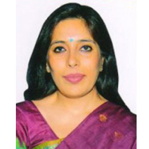
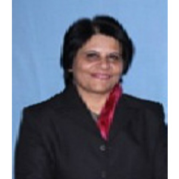
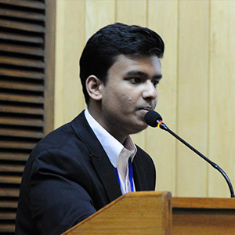

Messages
From the Principal
 Greetings to you from the Delhi Public School Ghaziabad family! 2014 is a landmark year for the MUNers of our school. Year after year they have enthusiastically participated in various MUN conferences, brought laurels to the school and made us proud. In 2013 we hosted the very first edition our DPSG MUN. This year the students have taken it upon themselves to make our MUN even bigger, better and more exciting for everyone involved. With great pleasure and pride I welcome you all to come, debate, change!
DPSG MUN promises to be a fresh new experience for all of its participants as the primary mission of this endeavor is the holistic development of the students. By simulating a Model United Nations Conference, we wish to provide an unmatched level of exposure to the students, whereby they are made to feel like responsible denizens of the world. Our aim is to play host to a vibrant conglomerate of dynamic young delegates who hope to spark to life a new era of change, where they would try and resolve some of the burning issues faced by our world today.
The need of the hour is to find amicable solution to the myriad and multifarious problems shrouding the world. This conference would undoubtedly provide a wide platform to the young ambassadors to display their art of diplomacy, their oratorical, analytical and problem solving skills in order to herald peace in a world fragmented by prejudice and mental blocks. Our endeavor is to give the youth of today an opportunity to simulate a future they envision as the leaders of tomorrow. A future that is promising and is theirs to own!
I urge the students to come forth and shoulder the responsibility of being the change they wish to see and bring about.
I cordially invite you all to be a part of the endeavor and contribute towards making this conference a phenomenal success.
From the Chargé d'affaires
Young people indeed have a unique Voice and imagination that the World needs to hear. Even the Smallest act can bring about a Change in today's World. On behalf of the entire Delhi Public School Ghaziabad family, it is with great pride that I welcome all the delegates to come and participate in DPSG MUN-2014.
We at DPSG understand that we live in a world where it is imperative to sensitize our students to the pertinent issues of global Concern and provide them with Opportunities that will facilitate in creating a world of peaceful Co-existence for one and all.
DPSG MUN is our earnest attempt in this direction to broaden the students' horizon, enhance their knowledge and help them to understand the World that they live in a little better. We aim to provide them with a forum to Voice out their opinions and viewpoints With Conviction. Interest and understanding of the Working of the United Nations is established through the simulations provided in the Various Committees. We aim to provide unprecedented opportunities to the young delegates and thereby help them to develop negotiating and leadership skills while being dignified and diplomatic in approach.
Our endeavor is to inculcate in our children respect for one another even when their ideologies conflict and provide a perspective outside of the classroom that will help them when they leave the portals of the school we look forward to your enthusiastic participation!
From the Secretary General
 Respected Sir/Ma'am, It is my pleasure to invite you to the 2nd edition of Delhi Public School Ghaziabad Model United Nations. After achieving a massive success with our 1st edition last year, we bring back to you the Conference to be held from July 11th to July 13th at Delhi Public School Ghaziabad. We shall be simulating 5 committees namely- United Nations General Assembly (SOCHUM), United Nations Human Tights Council, United Nations Security Council,Historic League of Arab States and the Strategic Policy Group of India. I sincerely hope the experience of decry one participating in the conference shall be a great one and everyone will manage to learn something from the conference.